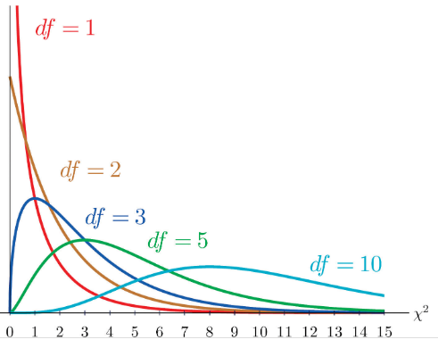
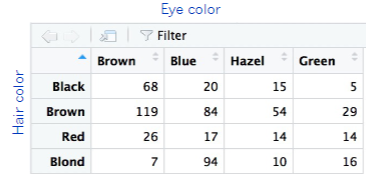
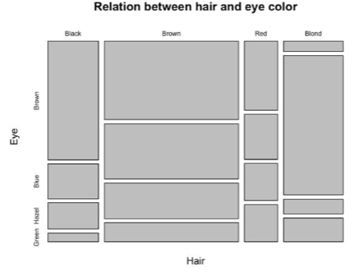

source("lab_05_tests.r")
library(testthat)
library(digest)
library(dplyr)
df = read.csv("../datasets/Lab_05_canadaIncomeEducation.csv")GEOG 374: \(\chi^2\)-test - Regional and Gender Differences in Canadian Income and Education
- Authors: Hewitt Lab (Kevin Pierce, Nina Hewitt and Micheal Jerowsky) \(\times\) COMET Team (Charlotte White, and Jonathan Graves)
- Last Update: 9 September 2023
This module has a suggested citation of:
Pierce, K., Hewitt, N., and Jerowsky, M., 2023. Interactive Notebooks for Statistics and Computation in Geography: Regional and Gender Differences in Canadian Income and Education. In Adshade et al. 2023. The COMET Project: Creating Online Materials for Econometrics Teaching. https://comet.arts.ubc.ca/.
Outline
Prerequisites
- Introduction to Jupyter
- Introduction to R
- Introduction to Data
Outcomes
After completing this notebook, you will be able to: * Visualize and explore data using a box plot. * Visualize and explore data using a mosaic plot. * Conduct a chi-square analysis.
References
Introduction
In this lab we will get acquainted with chi-square analysis by exploring inequities in pay and education. In Canadian society, these are a common subject of academic research with numerous implications for government and corporate policy.
One of the most well-understood inequities is the gender pay gap, whereby men tend to earn more than other genders in equivalent jobs (controlling for all other relevant factors). Another inequity often studied is regional variation in higher education.
These social problems are intricately nuanced and we will only study them superficially in this assignment. Here we will evaluate the gender pay gap and disparities in educational attainment across genders and regions using Canadian census data from 2016.
Note: A major limitation of Canadian census data is that it only records biological sex. Acknowledging that this is an oversimplification, we will use biological sex as a proxy for broader gender inequities in Canada.
Data
The canadaIncomeEducation.csv dataset contains six columns representing nearly 7000 individuals in Canada’s five largest cities. These are: 1. Income – the income level of the individual 2. Education – the highest education attained by the individual among High School, Bachelor Degree, Master Degree, and Doctoral Degree 3. City – The city in which the individual resides among Toronto, Ottawa, Montreal, Vancouver, and Calgary 4. Age – The age of the individual organized into a set of categorical variables 25-29, 30-34, …, 85+. 5. Major – The field of study of the individual, either as STEM (science, technology, engineering, medicine), BHASE (business, arts, social sciences, legal studies, health care, education, services), or NA (for high school graduates).
Prior to beginning this lab, run the r code below to read in the .csv file and save it to the variable df. The source and library functions are included so that you can complete the test questions in this module and they can be autograded. dplyr is a package for working with dataframes.
Part 1: Key Concepts
Chi-Squre Analysis
Chi-square analysis is used with categorical data for which there is count, proportion, or percent data. Typically this sort of analysis is conducted when determining if (1) data fits an expected distribution; (2) two factors are independent from one another; or (3) the distributions of two populations are the same.
The chi-square distribution is used when conducting such analyses. It is a positively skewed distribution, and its shape depends on the degrees of freedom present with the curve approximating a normal distribution when df > 90.

The test statistics based on the chi-square distribution are always greater than or equal to zero. When conducting a chi-square analysis, one can compute a test statistic and compare it to a critical value when determining whether or not to reject the null hypothesis; however, in this lab we will use r to compute a p-value which we will then compare to our desired \(\alpha\).
There are three primary types of chi-square analysis: (1) goodness of fit test; (2) test of independence; and (3) test for homogeneity.
Goodness of Fit Test:
The chi-square goodness of fit test is used to determine if an observed frequency distribution fits an expected frequency distribution.
Example: A researcher wishes to determine if there is a difference in the number of arrests in Vancouver based on the type of crime committed (theft, property-crime, drug use, and homicide) based on a random sample of 240 arrests.
When conducting a goodness of fit test, our hypotheses will be as follows:
\(H_0\): There is no difference from the expected frequency distribution.
\(H_1\): There is a difference from the expected frequency distribution.
Test of Independence:
The chi-square test of independence is used to determine whether two variables are independent of each other.
Example: A researcher wants to determine if party cabinet members’ opinions about greenhouse gas emissions limits are independent of party affiliation.
When conducting a test of independence our hypotheses will be as follows:
\(H_0\): The variables are independent of each other.
\(H_1\): The variables are dependent upon each other.
Test for Homogeneity of Proportions:
The chi-squared test for homogeneity of proportions is used to determine whether different populations share the same proportions of specified characteristics.
Example: A researcher wants to know if the proportion of students who smoke is the same for different grade levels (e.g. freshmen and seniors).
When conducting a test for homogeneity of proportions our hypotheses will be as follows:
\(H_0\): \(\rho_1 = \rho_2 = \rho_3 = \rho_4 ...\)
\(H_1\): At least one proportion is different.
Contingency Analysis and Visualization
Both the test of independence and the test for homogeneity of proportions are forms of contingency analysis, in which the researcher is looking for associations between variables. One common way to visualize this is using a contingency table. A contingency table displays how the frequencies of different values for one variable depend on the values of another variable when both are categorical.

Another useful visualization to consider is a mosaic plot. A mosaic plot is a graphical representation of a contingency table. It is a special type of stacked bar chart that shows cross tabulations of counts against a model where proportionally equal counts are expected. In this lab, we will use mosaic plots to help visualize the differences that exist between populations.

Part 2: Lab Exercises
Exercise 1: Evaluate Regional and Age Differences in Educational Attainment
First we will ensure that our data meet the assumptions of correlation and regression, and then we will investigate whether floods have changed through time within the Fraser basin using correlation analysis.
A) Investigate the dataframes for this lab using head and tail to view their structure, headings, and the total number of records. Then calculate the median income for each city in the dataset and aggregate these values in a dataframe called medIncomes.
head(df)
tail(df)
(medIncomes = aggregate(Income~City,data=df,FUN=median))Question 1: Which city appears to have the highest median income? Please remember to capitalise your answer.
answer_1 = "" # your answer here.
test_1()Question 2: Which city appears to have the lowest median income?
answer_2 = "" # your answer here
test_2()B) Produce a boxplot of Canadian incomes across cities. Put income on the y-axis and the cities on the x-axis. Label all axes and provide a title. You will need to control the limits of the plot using the ylim argument of the boxplot function. This will exclude the largest outliers from the plot in exchange for resolving the box-and-whisker components we care about.
boxplot(Income~City, # y,x
data=df, # the dataframe
ylim=c(0,300000), # limits the y-axis to prevent the most extreme values from making the visualization unreadable.
main = '', # Provide a descriptive title
xlab = '', # Provide a descriptive label
ylab = '', # Provide a descriptive label
col= 'lightblue'
)Question 3: In a few sentences, describe the shape of the income distribution (skew, variability, outliers) and comment on any apparent differences between cities. How do the income distributions compare to a normal distribution?
Write your answer here
C) Produce a contingency table named T between the highest degree individuals earned and the city that they live in. We will soon use this to investigate whether educational attainment is contingent on location.
Construct contingecy tables between two categorical variables y and x with table(x,y). The output counts the number of individuals having each unique combination of y and x.
(T = table(df$City,df$Education))D) Visualize this contingency table with a mosaic plot. You can produce mosaic plots shaded by the residuals with mosaicplot(T, shade=TRUE). You can investigate how to use it with help(mosaicplot) function as well.
mosaicplot(T, shade=TRUE)Question 4: In a sentence or two, comment on any differences in educational attainment between cities suggested by the mosaic plot.
Write your answer here
E) Conduct \(\chi^2\)-analysis to determine if educational attainment is contingent on city in Canada. Conduct the calculation and store its p-value as p1.
Question 5: What are your null and alternative hypotheses for this test?
\(H_0\): There is no difference from the expected frequency distribution; \(H_1\): There is a difference from the expected frequency distribution
\(H_0: \rho = 0\); \(H_1: \rho \neq 0\)
\(H_0\): \(\rho_1 = \rho_2 = \rho_3 = \rho_4\); \(H_1\): At least one proportion is different.
\(H_0\): The variables are independent of each other; \(H_1\): The variables are dependent upon each other.
answer_5 = '' # your answer here ('A', 'B', 'C', or 'D')
test_5()(T = table(df$City,df$Education)) # create and print a contingency table of city vs. education.
(C = chisq.test(T)) # run the chi-square test on the contingency table.
p1 = C$p.value # store the p-value as p1Question 6: Make a conclusion as to whether educational attainment is contingent on city at \(\alpha\)=0.05. Provide the relevant numerical value(s) to support your conclusion. In a sentence or two, interpret any differences in a few apparent city-degree disparities in your earlier mosaic plot.
Write your answer here
F) Now investigate if educational attainment is contingent on age. Construct a contingency table between highest degree earned and age. Produce a mosaic plot, then conduct \(\chi^2\)-analysis. Save your p-value as p2.
You will need to drop age groups 25-29 and those beyond 70-74 from the analysis to maintain sufficient counts for each category. We can do this using a mask that we can then apply to our dataframe.
mask = !(df$Age %in% c('25-29','70-74','75-79','80-84','85+')) #create a mask to exclude certain portions of the data from our dataset.
df1 = subset(df, mask) # store the subset as a new dataframe called df1
( T = table(df1$Education, df1$Age) ) # create and print a contingency table of education vs. age.
( C = chisq.test(T) ) # run the chi-square test on the contingency table.
( p2 = C$p.value ) # store the p-value as p2mosaicplot(T,shade=TRUE)Question 7: Is educational attainment contingent on age? (‘yes’ or ‘no’)
answer_7 = '' # your answer here ('yes' or 'no')
test_7()Question 8: Summarize your conclusion on whether educational attainment is contingent on age, making reference to the appropriate numerical values.
Write your answer here
Question 9: Interpret the major variations in educational attainment across age categories that are visible in your mosaic plot. Take care to explain how these are manifest in the plot for full credit.
Write your answer here
Exercise 2: Evaluate the Gender Pay Gap
Now we will investigate if there is a gender pay gap in Canada. However, we must first make a new dataframe df2 that classifies individual income levels into categories. For the purposes of this lab, we will use four categories: 0-25k, 25-50k, 50-75k, and 75-100k.
df2 <- df # copy our original dataframe to make changes to it.
breaks = c(0,25000,50000,75000,100000) # our break points
labels = c("0-25k","25-50k","50-75k","75-100k") # descriptive labels for each of the four pay categories
df2$IncomeBracket <- cut(df2$Income, breaks=breaks, labels=labels)A) Demonstrate that Canada’s five major cities show a pay gap between sexes. Construct a contingency table. Produce a mosaic plot. Conduct \(\chi^2\) analysis. Assign your p-value to a variable p3.
T = table(df2$IncomeBracket,df2$Sex) # construct the contingency tabe of income bracket vs. sex
mosaicplot(T, shade=TRUE) # construct a mosaic plot to visualize your contingency table.
( C = chisq.test(T) ) # conduct your chi-square analysis.
p3 = C$p.value # store the p-value as p3Question 10: What are your null and alternative hypotheses for this test?
\(H_0\): There is no difference from the expected frequency distribution; \(H_1\): There is a difference from the expected frequency distribution
\(H_0: \rho = 0\); \(H_1: \rho \neq 0\)
\(H_0\): \(\rho_1 = \rho_2 = \rho_3 = \rho_4\); \(H_1\): At least one proportion is different.
\(H_0\): The variables are independent of each other; \(H_1\): The variables are dependent upon each other.
answer_10 <- '' # your answer here ('A', 'B', 'C', or 'D')
test_10()Question 11: Can you reject your null hypothesis? (‘Yes’ or ‘No’)
answer_11 = '' # your answer here ('Yes' or 'No')
test_11()Question 12: Summarize your results, making reference to the appropriate numerical values.
Write your answer here
B) Now we will investigate the effect of education on the gender pay gap by conducting two separate chi-square analyses: one for master’s degree holders and one for high school graduates. Use the dataframe df2 binned across four income brackets. To start, form one dataframe df_ms containing only master’s degree holders, and another df_hs containing only high school graduates, then use these to develop two contingency tables T_ms and T_hs between income and sex.
mask_ms = df2$Education=='Master degree' # create a mask to select only master degree holders.
mask_hs = df2$Education=='High school' # create a mask to select only high school degree holders.
df_ms = subset(df2, mask_ms) # create a new dataframe selecting for master degree holders using the appropriate mask.
df_hs = subset(df2, mask_hs) # create a new dataframe selecting for high school degree holders using the appropriate mask.
T_ms = table(df_ms$IncomeBracket, df_ms$Sex) # construct a contingency table of income bracket vs. sex for master degree holders.
T_hs = table(df_hs$IncomeBracket, df_hs$Sex) # construct a contingency table of income bracket vs. sex for high school degree holders.
T_hsQuestion 13: How many female high school degree holders are there in the 50-75k income bracket?
answer_13 = # your answer here
test_13()C) Conduct two separate chi-square analyses, one for T_ms and another for T_hs. Assign your p-values to respectively p_ms and p_hs.
( C_hs = chisq.test(T_hs) ) # conduct your chi-square analysis.
p_hs = C_hs$p.value # store the p-value as p_hs
( C_ms = chisq.test(T_ms) ) # conduct your chi-square analysis.
p_ms = C_ms$p.value # store the p-value as p_msQuestion 14: Discuss your conclusions at 𝛼=0.05 in a few sentences, making specific reference to the appropriate numerical values from your analyses above. Does the severity of the gender pay gap depend on education level? Describe your conclusion.
Write your answer here